Epidemic simulation via a discrete-time, agent-based stochastic model with a random scenario
Introduction
We construct, here, the scenario for an epidemics, in which the population is composed of a number of agents (or individuals), aggregated into residences, and interacting with each other within the residences and through the following structures:
- clusters of school and workplaces,
- networks of social and commerce connections; and
- causual encounters with the general population.
In the current example, we build a random scenario, in a rectangular region.
Loading packages
using Random
using SparseArrays
using StatsBase
using Distributions
using Plots
using StatsPlots: groupedbar
using EpiSiming
#=
using Graphs
using Graphs
using GraphPlot
=#Building the Scenario
Set global parameters
Population number
num_population = 10_00010000Region size
region_size = (6, 12)(6, 12)Distribution of residences per size
res_size_distribution = [10, 22, 33, 22, 5, 5, 2, 1] |> v -> Weights(v / sum(v))8-element StatsBase.Weights{Float64, Float64, Vector{Float64}}:
0.1
0.22
0.33
0.22
0.05
0.05
0.02
0.01Susceptibility and infectivity parameters
Parameters of the Gamma distribution for the susceptibility and infectivity factors
Γ = (
sus_shape = 2.0,
sus_scale = 0.5,
inf_shape = 4.0,
inf_scale= 0.25
)(sus_shape = 2.0, sus_scale = 0.5, inf_shape = 4.0, inf_scale = 0.25)Age pyramid
pop_pyramid = let age_max = 100, p = 2, pyramid_func(a, age_max, p) = ( a + 1 ) * (age_max - a)^p
Weights(
pyramid_func.(0:age_max, age_max, p) / sum(pyramid_func.(0:age_max, age_max, p))
)
end101-element StatsBase.Weights{Float64, Float64, Vector{Float64}}:
0.0011532894698904953
0.0022606780188793485
0.0033228576206484946
0.004340520248879868
0.005314357877255402
0.006245062479457031
0.0071333260291666905
0.007979840500066315
0.008785297865837836
0.00955039010016319
⋮
0.0006864378924788228
0.000531205129831562
0.00039442499870254936
0.0002767894727737188
0.00017899052572700484
0.00010172013124434167
4.567026300766361e-5
1.1532894698904952e-5
0.0Contact rates
τ = Dict{Symbol, Float64}(
:residences => 0.3,
:work_places => 0.1,
:school_places => 0.2
)Dict{Symbol, Float64} with 3 entries:
:work_places => 0.1
:school_places => 0.2
:residences => 0.3Recovery rates
γ = (
rate_expos = 0.25, # rate out of exposed
rate_infec = 0.1, # rate out of infected
rate_asymp = 0.2 # rate out of asymptomatic
)(rate_expos = 0.25, rate_infec = 0.1, rate_asymp = 0.2)Fate probabilities
prob = (
asymp = 0.6, # probability of becoming asymptomatic (vs. symptomatic = infected)
decease = 0.02 # probability of deceasing
)(asymp = 0.6, decease = 0.02)Random number generator
Set random number generator for repeatability in testings
rng = MersenneTwister(123)MersenneTwister(123)Generating scenario
Generating a random matrix of blocks with the population divided per block
pop_blocks = EpiSiming.gen_random_pop_blocks(rng, num_population, region_size)6×12 Matrix{Int64}:
265 118 124 93 209 71 256 182 230 16 150 25
99 250 29 252 252 154 113 118 182 108 267 196
75 78 163 233 14 207 71 234 208 186 158 211
134 151 26 40 27 164 4 86 73 73 179 225
175 10 81 75 197 184 71 242 35 60 108 150
140 152 252 114 235 98 20 252 88 55 275 152Heatmap
display(
heatmap(
pop_blocks,
c = cgrad([:white, :orange, :red]),
annotate = [
(j, i, text(pop_blocks[i, j], 8, :black, :center))
for i in 1:size(pop_blocks, 1) for j in 1:size(pop_blocks, 2)
],
xlabel = "km",
ylabel = "km",
title = "Distribution per block of the $num_population area residents",
titlefont = 10
)
)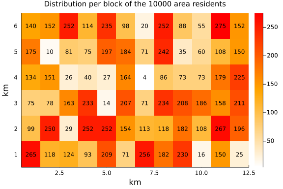
Generating residences per block
res_blocks_distrib = EpiSiming.gen_res_blocks(rng, pop_blocks, res_size_distribution)6×12 Matrix{Vector{Int64}}:
[10, 22, 28, 19, 4, 4, 1, 0] … [1, 3, 2, 3, 0, 0, 0, 0]
[5, 9, 12, 6, 2, 1, 0, 0] [6, 14, 22, 14, 3, 3, 1, 0]
[4, 7, 7, 5, 2, 1, 0, 0] [6, 15, 23, 15, 3, 4, 1, 0]
[5, 11, 15, 10, 2, 2, 0, 0] [8, 20, 24, 15, 4, 3, 1, 0]
[6, 14, 19, 12, 2, 2, 2, 0] [5, 12, 16, 11, 2, 2, 1, 0]
[8, 9, 16, 11, 2, 2, 0, 0] … [5, 10, 16, 11, 2, 3, 1, 0]Visualizations
display(
groupedbar(
[res_size_distribution sum(res_blocks_distrib) /
sum(Iterators.flatten(res_blocks_distrib))],
xticks = eachindex(res_size_distribution),
bar_position = :dodge,
bar_width = 0.7,
label = ["target" "generated"],
xlabel = "residence size",
ylabel = "fraction of residences",
title = "distribution of residences per size",
titlefont = 10
)
)
display(
histogram(
reshape(pop_blocks ./ map(sum, res_blocks_distrib), :, 1),
bins = firstindex(res_size_distribution):0.1:lastindex(res_size_distribution),
label = nothing,
xlabel = "ratio of residents per residence",
ylabel = "number of blocks",
title = "Distribution of the number of blocks per average residence size" *
"\nMean of the blocks average size: " *
"$(round(mean(pop_blocks ./ map(sum, res_blocks_distrib)), digits = 2))",
titlefont = 10
)
)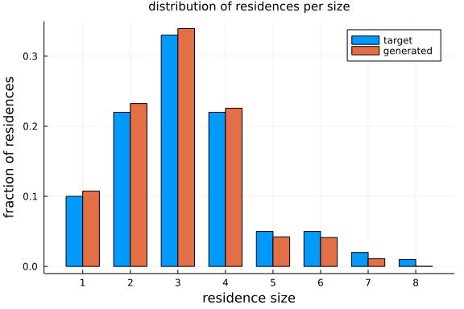 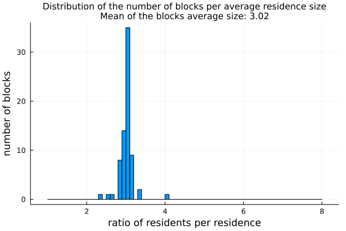
Generating the list of residences with all the required information
residences = EpiSiming.gen_residences(rng, res_blocks_distrib)3318-element EpiSiming.Residences{Int64, Float64}:
(1, (1.5555555555555556, 1.3888888888888888), 1, [1])
(1, (1.5, 1.0), 1, [2])
(1, (1.5, 1.5), 1, [3])
(1, (1.7222222222222223, 1.2222222222222223), 1, [4])
(1, (1.9444444444444444, 1.5), 1, [5])
(1, (1.3333333333333333, 1.7777777777777777), 1, [6])
(1, (1.5555555555555556, 1.0555555555555556), 1, [7])
(1, (1.5555555555555556, 1.2777777777777777), 1, [8])
(1, (1.6111111111111112, 1.6111111111111112), 1, [9])
(1, (1.7222222222222223, 1.7222222222222223), 1, [10])
⋮
(72, (6.083333333333333, 12.25), 4, [9954, 9955, 9956, 9957])
(72, (6.666666666666667, 12.916666666666666), 4, [9958, 9959, 9960, 9961])
(72, (6.083333333333333, 12.5), 4, [9962, 9963, 9964, 9965])
(72, (6.916666666666667, 12.5), 5, [9966, 9967, 9968, 9969, 9970])
(72, (6.166666666666667, 12.5), 5, [9971, 9972, 9973, 9974, 9975])
(72, (6.083333333333333, 12.916666666666666), 6, [9976, 9977, 9978, 9979,
9980, 9981])
(72, (6.5, 12.75), 6, [9982, 9983, 9984, 9985, 9986, 9987])
(72, (6.083333333333333, 12.75), 6, [9988, 9989, 9990, 9991, 9992, 9993])
(72, (6.916666666666667, 12.583333333333334), 7, [9994, 9995, 9996, 9997,
9998, 9999, 10000])Visualizations
display(
scatter(
residences.position,
markersize = 2,
markerstrokecolor = :auto,
label = false,
xlabel = "km",
ylabel = "km",
title = "Residences",
titlefont = 10
)
)
display(
scatter(
filter( p -> (2.0 ≤ first(p) ≤ 3.0) && (2.0 ≤ last(p) ≤ 3.0), residences.position),
markersize = 2,
markerstrokecolor = :auto,
label = false,
xlabel = "km",
ylabel = "km",
title = "Residences",
titlefont = 10
)
)
display(
scatter(
filter( p -> (2.0 ≤ first(p) ≤ 2.2) && (2.0 ≤ last(p) ≤ 2.2), residences.position),
markersize = 2,
markerstrokecolor = :auto,
label = false,
xlabel = "km",
ylabel = "km",
title = "Residences",
titlefont = 10
)
)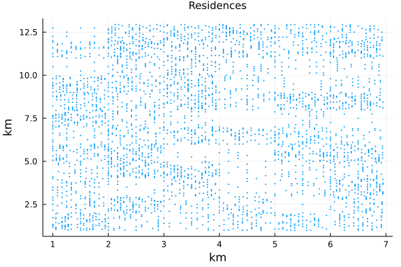 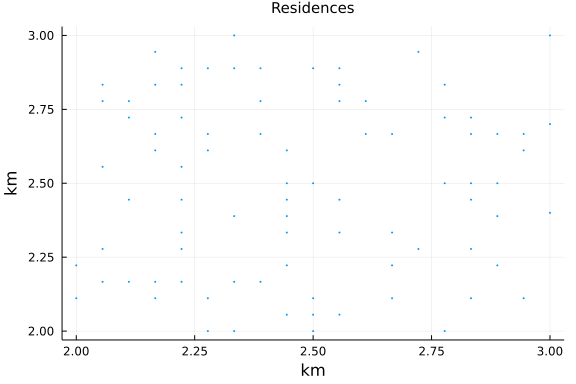 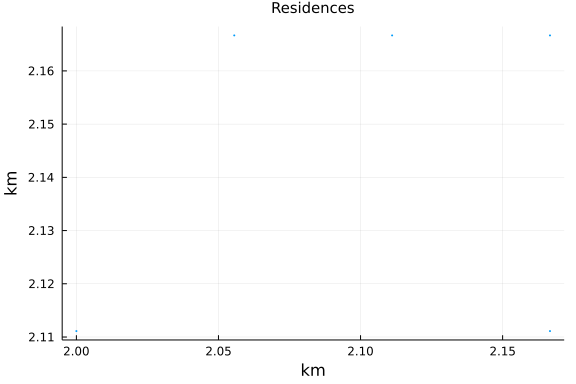
Generating population
population = EpiSiming.gen_population(
rng,
residences,
res_blocks_distrib,
Γ,
pop_pyramid
)10000-element EpiSiming.Population{EpiSiming.Phase, Int64, Int64, Float64,
Int8, Float64, Symbol}:
(S, 1, (E, 9223372036854775807), 1, (1.5694444444444444, 1.388888888888888
8), 64, 0.8429668909281123, 1.0871421914278978, Dict{Symbol, Int64}(), Dict
{Symbol, Int64}())
(S, 1, (E, 9223372036854775807), 2, (1.5138888888888888, 1.0), 34, 0.63460
32739780121, 0.9288554210581556, Dict{Symbol, Int64}(), Dict{Symbol, Int64}
())
(S, 1, (E, 9223372036854775807), 3, (1.5138888888888888, 1.5), 29, 1.86613
6384893467, 0.6379958240264992, Dict{Symbol, Int64}(), Dict{Symbol, Int64}(
))
(S, 1, (E, 9223372036854775807), 4, (1.7361111111111112, 1.222222222222222
3), 21, 1.9630070493538805, 0.49089045628844613, Dict{Symbol, Int64}(), Dic
t{Symbol, Int64}())
(S, 1, (E, 9223372036854775807), 5, (1.9583333333333333, 1.5), 11, 0.17974
072857925905, 0.9196908284361106, Dict{Symbol, Int64}(), Dict{Symbol, Int64
}())
(S, 1, (E, 9223372036854775807), 6, (1.347222222222222, 1.7777777777777777
), 18, 0.8018440204599591, 0.8572836161482715, Dict{Symbol, Int64}(), Dict{
Symbol, Int64}())
(S, 1, (E, 9223372036854775807), 7, (1.5694444444444444, 1.055555555555555
6), 46, 0.7121991800323644, 1.4273823226339426, Dict{Symbol, Int64}(), Dict
{Symbol, Int64}())
(S, 1, (E, 9223372036854775807), 8, (1.5694444444444444, 1.277777777777777
7), 47, 0.7803803598677808, 0.7458566679008322, Dict{Symbol, Int64}(), Dict
{Symbol, Int64}())
(S, 1, (E, 9223372036854775807), 9, (1.625, 1.6111111111111112), 84, 0.753
3507391116316, 1.0597501527579962, Dict{Symbol, Int64}(), Dict{Symbol, Int6
4}())
(S, 1, (E, 9223372036854775807), 10, (1.7361111111111112, 1.72222222222222
23), 47, 1.0583784725947785, 0.6163376056877701, Dict{Symbol, Int64}(), Dic
t{Symbol, Int64}())
⋮
(S, 1, (E, 9223372036854775807), 3317, (6.072916666666666, 12.731957804087
823), 39, 0.7425559871162212, 1.878529197903739, Dict{Symbol, Int64}(), Dic
t{Symbol, Int64}())
(S, 1, (E, 9223372036854775807), 3317, (6.09375, 12.731957804087823), 74,
1.3467418715174564, 0.6158224898743601, Dict{Symbol, Int64}(), Dict{Symbol,
Int64}())
(S, 1, (E, 9223372036854775807), 3318, (6.9375, 12.583333333333334), 21, 0
.5713254684769675, 1.2604338561736381, Dict{Symbol, Int64}(), Dict{Symbol,
Int64}())
(S, 1, (E, 9223372036854775807), 3318, (6.929656037538724, 12.599621489218
084), 63, 0.71166954083545, 0.6573989249359745, Dict{Symbol, Int64}(), Dict
{Symbol, Int64}())
(S, 1, (E, 9223372036854775807), 3318, (6.91203081387591, 12.6036443315037
89), 35, 0.9299123501842387, 0.5603267260793015, Dict{Symbol, Int64}(), Dic
t{Symbol, Int64}())
(S, 1, (E, 9223372036854775807), 3318, (6.8978964819187, 12.59237257789828
3), 8, 0.3495478705397754, 0.7703472343146436, Dict{Symbol, Int64}(), Dict{
Symbol, Int64}())
(S, 1, (E, 9223372036854775807), 3318, (6.8978964819187, 12.57429408876838
5), 22, 0.6946812843355863, 2.073824042353887, Dict{Symbol, Int64}(), Dict{
Symbol, Int64}())
(S, 1, (E, 9223372036854775807), 3318, (6.91203081387591, 12.5630223351628
79), 24, 1.1293777785439765, 1.4010740192330449, Dict{Symbol, Int64}(), Dic
t{Symbol, Int64}())
(S, 1, (E, 9223372036854775807), 3318, (6.929656037538724, 12.567045177448
584), 62, 0.8959454204650464, 1.9864694366090996, Dict{Symbol, Int64}(), Di
ct{Symbol, Int64}())Susceptibility distribution
display(
scatter(
population.susceptibility,
title = "Susceptibility (gamma distribution with mean $(Γ.sus_shape * Γ.sus_scale))",
titlefont = 10,
label = nothing,
xlabel = "sample of population",
ylabel = "susceptibility"
)
)
let bins = 100, interval = extrema(population.susceptibility) |> u -> u[2] - u[1]
plt = histogram(
population.susceptibility,
bins = bins,
label = "generated",
title = "susceptibility histogram",
titlefont = 10,
xlabel = "susceptibility",
ylabel = "population"
)
plot!(
plt,
x -> (num_population * interval / bins + 1) *
Distributions.pdf(Distributions.Gamma(Γ.sus_shape, Γ.sus_scale), x),
label = "target (Gamma distribution)"
)
display(plt)
end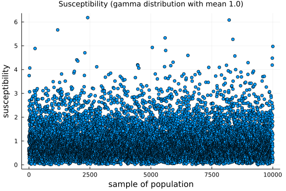 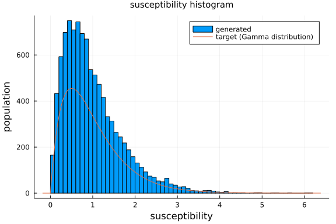
Infectivity
display(
scatter(
population.infectivity,
title = "Infectivity (gamma distribution with mean $(Γ.inf_shape * Γ.inf_scale))",
titlefont = 10,
label = nothing,
xlabel = "sample of population",
ylabel = "infectivity"
)
)
let bins = 100, interval = extrema(population.infectivity) |> u -> u[2] - u[1]
plt = histogram(
population.infectivity,
bins = bins,
label = "generated",
title = "infectivity histogram",
titlefont = 10,
xlabel = "infectivity",
ylabel = "population"
)
plot!(
plt,
x -> (num_population * interval / bins + 1) *
Distributions.pdf(Distributions.Gamma(Γ.inf_shape, Γ.inf_scale), x),
label = "target (Gamma distribution)"
)
display(plt)
end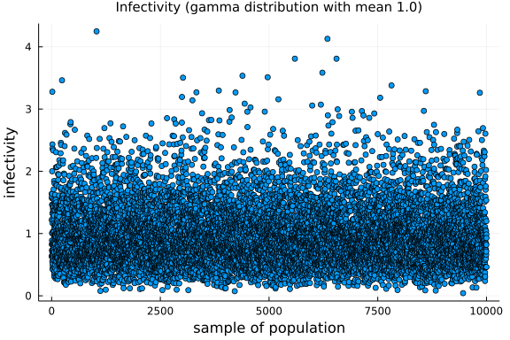 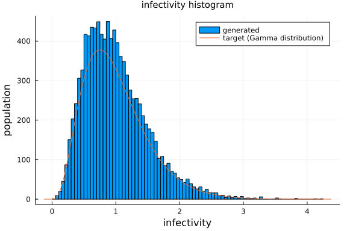
Age distribution
plt = histogram(
population.age,
bins = length(pop_pyramid) + 1,
label = "generated",
title = "Age pyramid",
titlefont = 10,
xlabel = "age",
ylabel = "individuals"
)
plot!(plt, 0:length(pop_pyramid) - 1, num_population * pop_pyramid, label = "target")
display(plt)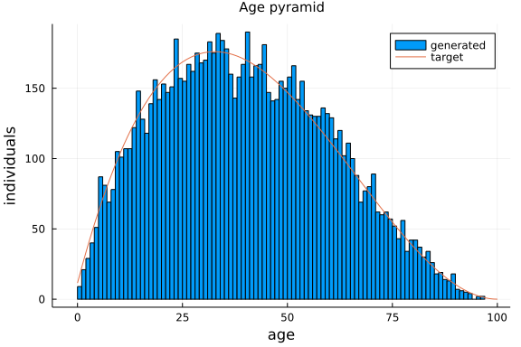
Agents location
display(
scatter(
population.position,
c = map(s -> EpiSiming.phase_colors[s], population.phase),
markersize = 1,
markerstrokecolor = :auto,
label = false,
xlabel = "km",
ylabel = "km",
title = "Population",
titlefont = 10
)
)
display(
scatter(
filter(p -> (3.0 < first(p) < 4.0) & (1.0 < last(p) < 2.0), population.position),
c = map(
n -> EpiSiming.phase_colors[population.phase[n]],
filter(
n -> (3.0 < first(population.position[n]) < 4.0) &
(1.0 < last(population.position[n]) < 2.0),
eachindex(population.position)
)
),
markersize = 4,
markerstrokecolor = :auto,
xlabel = "km",
ylabel = "km",
label = false,
title = "Population",
titlefont = 10
)
)
display(
scatter(
filter(p -> (3.2 < first(p) < 3.8) & (1.2 < last(p) < 1.8), population.position),
c = map(
n -> EpiSiming.phase_colors[population.phase[n]],
filter(
n -> (3.2 < first(population.position[n]) < 3.8) &
(1.2 < last(population.position[n]) < 1.8),
eachindex(population.position)
)
),
markersize = 4,
markerstrokecolor = :auto,
xlabel = "km",
ylabel = "km",
label = false,
title = "Population",
titlefont = 10
)
)
display(
scatter!(
filter( p -> (3.2 ≤ first(p) ≤ 3.8) && (1.2 ≤ last(p) ≤ 1.8), residences.position),
markersize = 4,
markerstrokecolor = :auto,
color = :green,
label = false,
xlabel = "km",
ylabel = "km",
title = "Residences",
titlefont = 10
)
)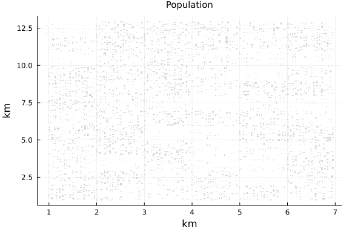 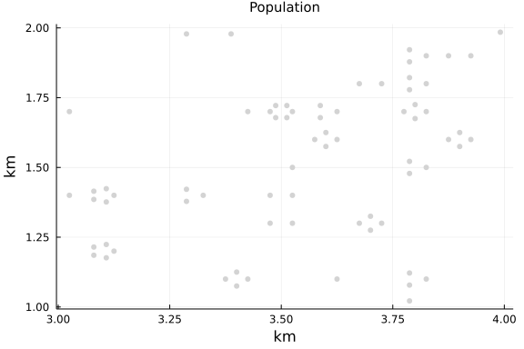 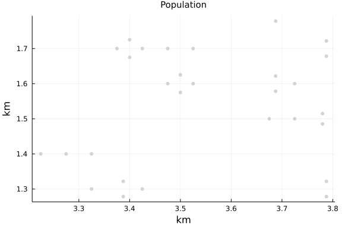 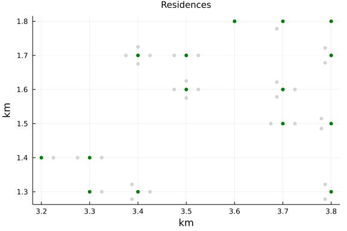
Generate clusters
max_size = 100
α = 1.8
clusters = Dict{Symbol, Vector{Vector{Int}}}()
push!(
clusters,
:work_places => EpiSiming.gen_clusters(
rng,
filter(n -> population.age[n] ≥ 18, 1:num_population),
max_size,
α
)
)
push!(
clusters,
:school_places => EpiSiming.gen_clusters(
rng,
filter(n -> population.age[n] < 20, 1:num_population),
max_size,
α
)
)
for (k, v) in clusters
for (i, r) in enumerate(v)
for n in r
push!(population.clusters[n], k => i)
end
end
endVisualizations
plt = histogram(
length.(clusters[:work_places]),
bins = max_size,
xlabel = "work size",
ylabel = "number of work places",
label = "generated",
title = "Distribution of work places according to size",
titlefont = 10
)
plot!(
plt,
length(clusters[:work_places]) * EpiSiming.decay.(1:max_size, α) / sum(EpiSiming.decay.(1:max_size, α)),
linewidth = 2,
label = "target"
)
display(plt)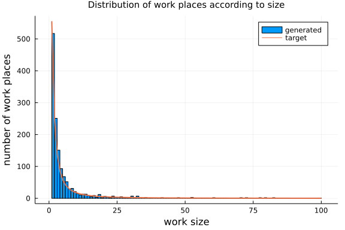
Evolution of the epidemics
Initial infection
num_exposed_at_time_0 = div(num_population, 500) # ( 1/500 = 0.002 = 0.2%) 20 for 10_000
exposed_at_time_0 = sample(rng, 1:num_population, num_exposed_at_time_0, replace = false)
# population.phase[exposed_at_time_0] .= EXPOSED
for n in exposed_at_time_0
population.phase[n] = EXPOSED
next_phase, next_change = EpiSiming.transition_rules(rng, EXPOSED, 1)
population.next_transition[n] = (next_phase, next_change)
endEvolution parameters
num_steps = 360
time_step = 11Time evolution
@time evolution = EpiSiming.evolve!(
rng,
population,
residences,
clusters,
τ,
γ,
prob,
num_steps,
time_step,
verbose_step = 10
)
@time summary = EpiSiming.get_summary(evolution)1.559234 seconds (367.95 k allocations: 61.696 MiB, 2.46% gc time, 11.73%
compilation time)
0.215873 seconds (2 allocations: 19.766 KiB)
360×7 Matrix{Int64}:
9980 20 0 0 0 0 0
9980 18 0 2 0 0 0
9979 18 1 2 0 0 0
9977 18 2 3 0 0 0
9975 16 5 4 0 0 0
9973 12 11 4 0 0 0
9971 8 14 7 0 0 0
9965 11 14 10 0 0 0
9957 17 16 10 0 0 0
9949 24 17 10 0 0 0
⋮ ⋮
1987 0 0 0 7872 141 0
1987 0 0 0 7872 141 0
1987 0 0 0 7872 141 0
1987 0 0 0 7872 141 0
1987 0 0 0 7872 141 0
1987 0 0 0 7872 141 0
1987 0 0 0 7872 141 0
1987 0 0 0 7872 141 0
1987 0 0 0 7872 141 0Visualizations
display(
plot(
summary[:, 2:end],
labels = string.(reduce(hcat, EpiSiming.phaselist[2:end])),
legend = :left,
xlabel = "day",
ylabel = "cases",
title = "time evolution of cases",
titlefont = 10
)
)
display(
plot(
summary[:, [2, 3, 4, 6]],
labels = string.(reduce(hcat, EpiSiming.phaselist[[2, 3, 4, 6]])),
legend = :right,
xlabel = "day",
ylabel = "cases",
title = "time evolution of cases",
titlefont = 10
)
)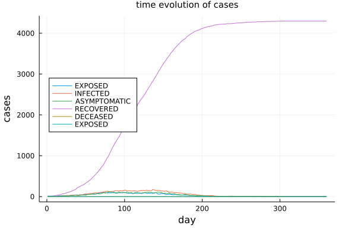 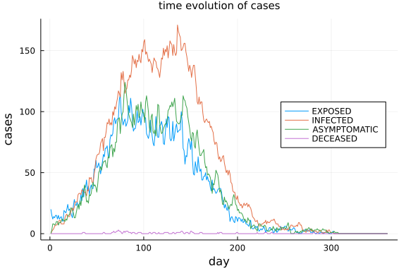